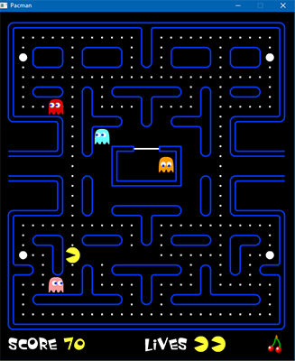
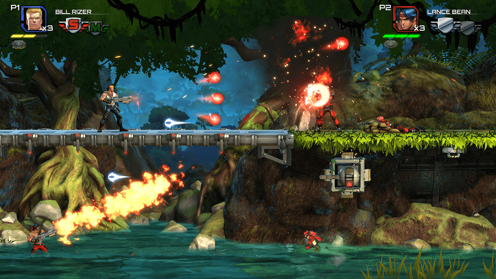
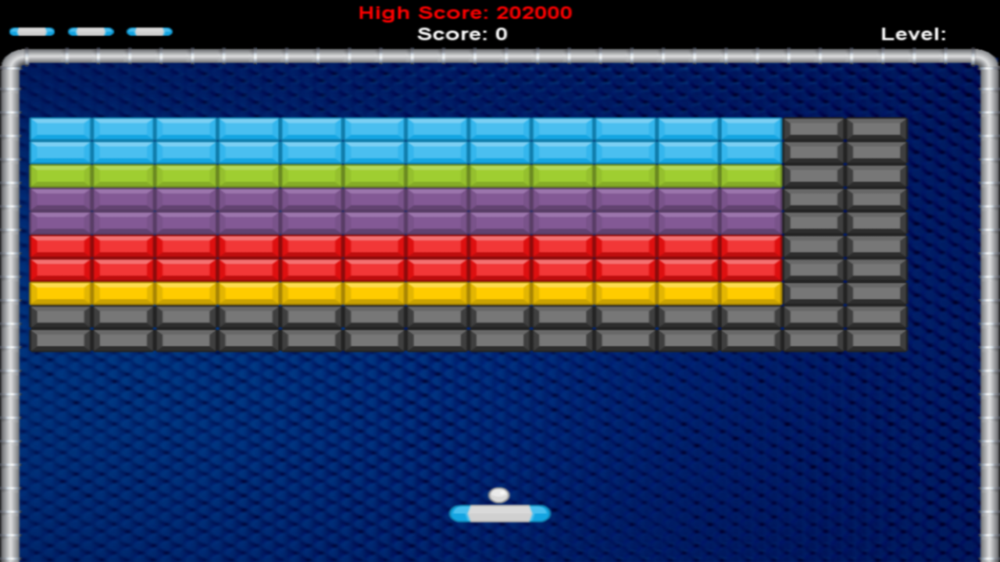
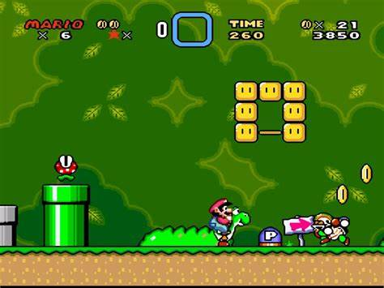

Jeux en 2 dimensions
Éléments de compétence ciblés
00SW - 1 : Analyser le projet de développement de l’application
Habiletés
- Comprendre le mécanisme de simulation en temps réel
- Décortiquer les éléments du jeu à réaliser
Un jeu ou une simulation?
Un jeu d'ordinateur est en fait la simulation d'un environnement. Le concepteur détermine les règles du monde dans lequel l'utilisateur se retrouve. Elle devient un jeu lorsque le concepteur définit des interactions stimulantes, un but désirable, une progression accroheuse, un thème visuel excitant... Une myriade de facteurs peuvent retenir l'intérêt du joueur
La boucle de jeu
Que le jeu soit développé à partir d'un code original ou implémenté au moyen d'un moteur (Unity dans le cadre du cours), il s'appuie toujours sur une boucle pour donner l'illusion d'une réalité alternative.
Phase 1 : Initialisation
Avant de démarrer la boucle il y a toujours une phase d'initialisation. Que ce soit le chargement initial, un changement de niveau ou même l'apparition d'un nouvel ennemi, il faudra préparer l'état de départ avant de passer à l'action!
Phase 2 : Mise à Jour
La mise à jour fait partie intégrante de la boucle. Cette étape gère entre autre : - La saisie et la réaction aux commandes de l'utilisateur - La progression du jeu - L'implémentation des règles et des mécaniques du jeu
C'est à cet endroit que la majorité de la logique de jeu est appliquée
Phase 3 : Affichage
Enfin les éléments sont affichés (ou diffusés dans le cas de l'environnement sonore). Une phase qui est cruciale pour que le joueur puisse apprécier le résultat de ses actions et constater l'état mis à jour du jeu.
Types de jeux en 2 dimensions
Jeux à écran simple

- Caméra fixe
- Vue de haut ou de côté
- Genres fréquents : arcade, puzzle, rythme
- Quelques exemples : casse-brique, Tetris, Guitar Hero, Street Fighter
Jeux à défilement

- La caméra suit le joueur
- Vue de haut, de côté, isométrique
- Genres féquents : course, action/aventure, platformer, combat, roguelite
- Quelques exemples : Zelda, Double Dragon, Super Mario, Hotline Miami
Les types et genres peuvent être combinés. Plusieurs jeux jonglent entre les différents concepts pour créer une expérience unique!
Un domaine orienté objet
Les exercices d'apprentissage en programmation orientée objet utilisent féquement des items de la vie courante comme : un vélo, une voiture, une personne, etc...
Le jeu tente de créer un monde virtuel par conséquent il faudra décrire chacun des éléments du jeu par programmation. Exemples : une voiture, une personne, un outils, etc...
Le lien entre le jeu (ou la simulation) et la conception orientée objet est très fort. Les moteurs de jeu offrent toujours au développeurs un objet de base qui permet de concrétiser un élément.
Dans le cadre du cours le moteur Unity utilise le GameObject, une classe flexible et extensible. En analysant l'image ci-dessous, quelques GameObjects peuvent être identifiés.

- La balle
- Le joueur (palette)
- Les briques (plusieurs objets ou un objet parent avec des héritiés)
- Les murs
En pratique
À partir de l'image fournie exclusivement, identifier les différents GameObject possibles pour le jeu Super Mario World.

Document de conception
Les jeux et simulations commencent toujours par une idée mais son implémentation nécessite beaucoup plus d'organisation. Que ce soit sur une collection de bouts de papiers, dans un fichier correctement formatté ou un heureux mélange des deux, le point de départ est le de document de conception du jeu.
Dans le cadre du cours il sera plus limité mais tout aussi nécessaire, ne serait-ce que pour organiser le travail à réaliser.
Il n'y a pas de modèle définitif et universellement accepté pour ce document. En revanche, il contient toujours l'idée derrière le jeu, le détail des éléments du jeu, l'explication des mécaniques, la méthode pour créer l'envie de jouer et l'ébauche du visuel désiré.
En pratique
- Télécharger les documents de conception Dirty Bomb et Zombie Toys, dans la section fichier de votre groupe Teams pour le cours.
- Analyser la structure des documents et comparer les informations regroupées dans chacun.
- Seul ou en équipe de 2, en vous inspirant des documents analysés, créer le modèle de document de conception que vous utiliserez au cours de la session.